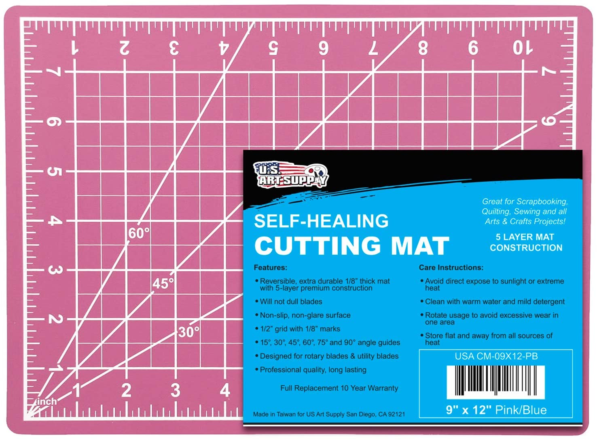

| 1 |
PVC Cutting Mat |
 |
- Durable 5-Ply Self Healing Construction
- 1/2" grid with 1/8" marks for precise alignment as well as 45° and 60° guides.
- The green/black mats are reversible with grid markings on each side.
- Cutting mats also have lines for cutting diagonals
- Protect your table top from sharp blades, writing instruments and other art and craft tools.
|
$8.96 |
Pink PVC Cutting Map
|
| 2 |
Dried Pressed Flowers |
 |
- Can be used to decorate cards, candles, packages, lampshades, scrapbooks, walls, wedding invitations and programs, soaps, floral design, flower making and even inked and used to stamp on paper.
- Beautiful, Made of natural Flowers or Leaves, thus each piece varies slightly in size and shape.
- Fabric Butterfly，Made with Polyester fabric,very thin and beautiful. Add to your craft supplies and attach these beautiful butterflies to scrapbook pages tote bags and other craft projects with glue or by sewing.
- Natural, Perfect for craft DIY scarpbooking, greeting card making, house decoration, Jewelry making, phone case decoration and so on.
- Vacuum packaging to protect the flowers with safe shipping，Scrapbooking, Shapes and colors of flowers well preserved.
|
$9.59 |
Real Dried Pressed Flowers |
| 3 |
Round Corner Trimmer |
 |
- Made of ABS and Stainless steel，sharp enough for ensuring precision cutting for a neat and clean appearance.
- SIZE:4mm 7mm 10mm corner radiuses
- EASY TO USE: Simply push the corner of your paper inside until its properly lodged against the guides and press the handle down.
- APPLICATION WIDELY: Suitable for cutting paper, photographs, scrapbooking, business cards or gift card.
- PACKAGE INCLUDES: Package includes 1 pack
|
$9.59 |
3 Way Corner Rounder Punch |
| 4 |
Craft Kit for Kids |
 |
- With over 1800 pieces, this ultimate craft box has everything to keep your kids occupied for hours with fun creative projects!
- Comes in a fantasic triple layer, sturdy plastic box with different compartments in order to keep all the crafts neat and organized!
- Let your childrens creative imaginations run wild. Endless possibilities to create all different sorts of crafts!
- Makes an amazing gift or present 🥰
- Suitable for kids ages 4 and over, a number of colorful craft items can meet different needs when they doing projects
|
$32.80 |
Crafts Supplies Set for Kids |
| 5 |
Deluxe Art Supplies |
 |
- Incredible art set include - premium sketchbox easel, 12 colors acrylic paint, 10 paint brushes, 3 Canvas Panels, palette. Use a awesome painting kit to create prefect works.
- The easel is made of high-quality beech wood, smooth surface and fine workmanship.
- Paint set has passed CE, EN71, ASTMD-4236 certification.
- Selected bristles are soft and not easy to fall off. 10 different models, with exquisite nylon bag, more convenient to use
- We're sure you'll love using the art set for artistic creation
|
$38.98 |
Deluxe Art Supplies |